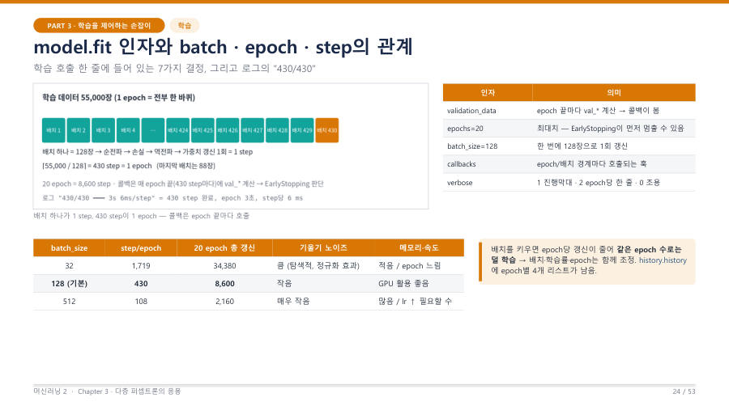

batch · step · epoch — 한 바퀴를 세는 세 단위 ★★★
세 낱말은 모두 "학습 데이터를 어떻게 나눠서 몇 번 공부하는가"를 말해요. 교수님이 "학생들이 되게 헷갈린다, 취업 면접에도 나올지 모른다"며 가장 길게 설명한 부분이에요.
| 낱말 | 뜻 |
|---|---|
| batch (배치) | 한 번에 모델에 넣는 샘플 묶음이에요. 묶음 크기가 batch_size(예 128장)예요. |
| step (스텝) | 배치 하나로 순전파 → 손실 → 역전파 → 가중치 갱신을 한 번 하는 것이에요. |
| epoch (에포크) | 학습 데이터 전체를 한 바퀴 다 쓴 것이에요. 배치를 끝까지 소진하면 1 epoch이에요. |
문제집에 문제가 55,000개 있어요. 한 번에 128문제씩 풀고 채점해서 오답을 고치는 것이 1 step이에요. 128문제 묶음이 batch예요. 문제집 한 권을 끝까지 다 풀면 1 epoch이고, 같은 문제집을 20번 반복하면 20 epoch이에요. 교수님은 "갔다가 돌아오는 한 번을 1 epoch이라고 하면 틀리고, 그건 1 step이에요"라고 강조했어요.
1 epoch의 step 수 = ⌈ 학습 샘플 수 ÷ batch_size ⌉ (소수가 나오면 올림)
왜 올림일까요? 나누어떨어지지 않으면 마지막에 batch_size보다 적은 자투리 배치가 남는데, 이것도 버리지 않고 한 step으로 쓰기 때문이에요. 55,000 ÷ 128 = 429.69이고, 429개의 꽉 찬 배치(54,912장) 뒤에 88장이 남아서 430번째 step이 돼요.
그래서 학습 로그에 나오는 430/430은 "이번 epoch의 전체 step 430개 중 430번째까지 끝났다"는 뜻이에요. 분모 430이 1 epoch의 step 수이고, 진행 중에는 215/430처럼 보여요. 20 epoch이면 총 갱신 횟수는 430 × 20 = 8,600번이에요.
| batch_size | step/epoch | 20 epoch 총 갱신 | 특징 |
|---|---|---|---|
| 32 | ⌈55,000/32⌉ = 1,719 | 34,380 | 갱신이 잦고 기울기가 들쭉날쭉해요(노이즈가 큼). epoch이 느려요. |
| 128 (이 수업) | ⌈55,000/128⌉ = 430 | 8,600 | 균형이 좋고 GPU 활용이 좋아요. |
| 512 | ⌈55,000/512⌉ = 108 | 2,160 | 갱신이 적고 매끈해요. 같은 epoch에서는 덜 학습돼서 학습률을 올려야 할 수 있어요. |

배치를 키우면 어떻게 될까요? epoch당 step 수가 줄어서 갱신 횟수가 줄어요. 같은 epoch 수로는 덜 학습하는 셈이라, 배치·학습률·epoch은 함께 조정해야 해요.
배치 크기를 128, 256, 512처럼 2의 거듭제곱으로 쓰는 것은 컴퓨터(GPU)의 연산 단위가 2의 n승이라 효율적이기 때문이에요. 250이나 300을 써도 틀린 것은 아니에요(교수님이 "시험에는 안 나온다"고 한 참고 내용이에요).
함정을 조심해요. "학습 샘플 수"는 학습 세트의 크기예요. MNIST 전체 70,000장이나 학습 60,000장이 아니라, 검증 5,000장을 떼고 남은 55,000장이에요. 문제에서 어느 숫자를 쓰라는지 읽고 계산해요.
계산 순서는 "① 학습 샘플 수 확인 → ② batch_size로 나눔 → ③ 소수면 올림"이에요. 올림이 헷갈리면 "나머지가 조금이라도 있으면 자투리 배치가 하나 더 생긴다"고 떠올려요.
연습 문제 (정답은 눌러서 확인해요)
| 번호 | 문제 |
|---|---|
| ① | 학습 샘플 60,000개, batch_size 100이면 1 epoch의 step 수는? |
| ② | 학습 샘플 45,000개, batch_size 64이면 1 epoch의 step 수는? |
| ③ | 학습 샘플 50,000개, batch_size 128로 10 epoch 학습하면 총 갱신(step) 횟수는? |
| ④ | 전체 데이터 70,000장에서 테스트 10,000장과 검증 5,000장을 떼고 batch_size 128로 학습하면 1 epoch은 몇 step? |
정답 보기
① 60,000 ÷ 100 = 600 → 600 step이에요. ② 45,000 ÷ 64 = 703.125 → 올림해서 704 step이에요. ③ 50,000 ÷ 128 = 390.6 → 391 step/epoch, 391 × 10 = 3,910번이에요. ④ 학습 샘플은 70,000 − 10,000 − 5,000 = 55,000이므로 ⌈55,000 ÷ 128⌉ = 430 step이에요.
step은 미니배치 하나로 순전파·역전파·가중치 갱신을 한 번 수행하는 단위이고, epoch은 학습 데이터 전체를 한 번 모두 사용한 것이다. 1 epoch의 step 수는 ⌈학습 샘플 수 / batch_size⌉이며, 55,000개를 batch 128로 학습하면 ⌈429.7⌉ = 430 step이다. 배치를 키우면 epoch당 갱신 횟수가 줄어든다.
잠깐 확인 — 로그의 "430/430"은 무슨 뜻인가요?
이번 epoch이 총 430 step이고, 그 430 step을 모두 마쳤다는 뜻이에요(분모 = 1 epoch의 step 수 = ⌈55,000/128⌉).
화면을 가리고 "batch · step · epoch — 한 바퀴를 세는 세 단위 ★★★"을(를) 친구에게 설명하듯 한 문장으로 말해 보세요. 막히면 위의 빨간 칸만 다시 보고 넘어가요.
자료: 6주차 · 머신러닝2_chapter3_redesign.pdf(p.18–28) · 머신러닝06.txt, 머신러닝07.txt(10/19 중간고사 복습)